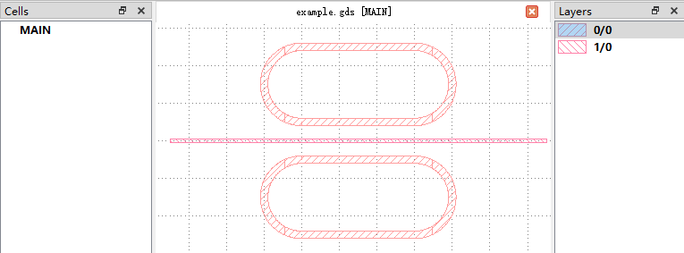

Get Started
Waveguide 类
首先简要介绍该类的实现思路。Waveguide 类主要调用 gdstk.FlexPath 生成波导几何结构，每当调用生成几何结构的方法，
Waveguide 类将创建 gdstk.FlexPath 对象，自动对 Path 起始点等几何参数进行初始化；
并调用 gdstk.FlexPath.to_polygon() 生成多边形坐标；最后，调用 add_object() 方法将多边形坐标保存至列表
polygons ，并将对应layer及datatype信息同步保存至列表 layers 和 datatypes。
此外，Waveguide类还提供了 generate_pcell() 方法，基于 polygons ， layers 和 datatypes 三个列表，
通过调用 gdstk.Polygon 生成结构，并放置于 gdstk.Cell 之上，从而返回 PCell，用于更高层次 Device 对象的构建。
Note
Waveguide 中 turn 以及 turn 方法，由于 gdstk 包的bug，是基于 gdstk.ellipse 实现的，
待 gdstk 中 bug 修复后该方法的实现会同步修改。同理， gdstk 包中 gdstk.FlexPath.parametric 也存在类似 bug，
为了保证不同波导段能够完美连接， spline 方法在欧拉曲线的头和尾增加了 1 um 的缓冲区，即与头尾斜率一致的直线段，
因此，当前版本如果使用 spline 方法构建波导，不建议收尾曲率非 0。
下面列举一个使用 Waveguide 类的例子
import gdspy
from ElementStructures import Path
# The GDSII file is called a library, which contains multiple cells.
lib = gdspy.GdsLibrary()
# initialize a waveguide with starting point at (0, 0) and width of 2.4 um on layer 0
# there is also a heater with width of 0.5 um on layer 2
# the paths of waveguide and its heater are the same
testPath = Waveguide([0, 0], [2.4, 0.5], layer=[0, 2], precision=1e-4)
testPath.segment(10)
testPath.turn(30, -np.pi/3)
testPath.segment(10)
testPath.turn(30, np.pi/3)
testPath.spline([100, 100, 0, 0])
testPath.segment(10)
# generate the PCell and put the PCell in library
lib.add(testPath.generate_pcell('FIRST'))
# write the gds file
lib.write_gds("first.gds")
Note
在上述例子中，我们首先初始化了 Waveguide 类，起始点为 [0, 0]，而宽度为 [2.4, 0.5]。 事实上，能够给宽度一个list，是 gdstk 相较于 gdspy 新增的 feature， 即可以通过给宽度一个 list，从而直接得到多条路径重合的 Path，十分适合于与 Waveguide 重合的 heater 构建。
上述代码所得 gds 文件，其中图形如下图：
{kind=link}
Device 类
Device 为定义任意器件提供了通用的方法和参数。一个典型例子如下
from Devices import Device
import gdstk
import numpy as np
# Parent class of all the devices object.
class CircleExample(Device):
def __init__(self, name):
super().__init__(name)
self._position = [0, 0]
self._radius = 5
self._layer = 1
##############################################################################
# All the parameters for defining a pattern should be realized with decorators
# Only in this way, the dependency of parameters can be resolved
@property
def position(self):
return self._position
@property
def radius(self):
return self._radius
@property
def layer(self):
return self._layer
@position.setter
def position(self, value):
self._position = value
self.clearall()
@radius.setter
def radius(self, value):
self._radius = value
self.clearall()
@layer.setter
def layer(self, value):
self._layer = value
self.clearall()
# End of parameter definition
####################################################################################
# draw to generate geometry (PolygonSet)
def draw(self):
rnd = gdstk.ellipse(self._position, self._radius/3, initial_angle=0, final_angle=2*np.pi,
layer=self._layer,
tolerance=1e-4)
self.add_polygon(rnd)
rnd = gdstk.ellipse(self._position + np.array([10, 10]), self._radius, initial_angle=0,
final_angle=2 * np.pi,
layer=self._layer,
tolerance=1e-4)
self.add_polygon(rnd)
if __name__ == "__main__":
# Example
# initialize the library
lib = gdstk.Library()
# generate segment path
testCircle = CircleExample("TEST")
testCircle.draw()
testCircle.draw_box()
# generate the PCell and put the PCell in library
lib.add(testCircle.generate_pcell('FIRST'))
# write the gds file
lib.write_gds("first.gds")